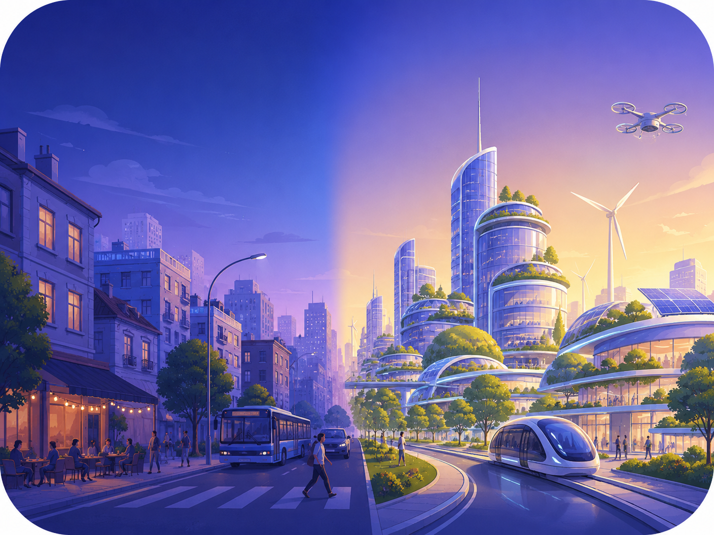
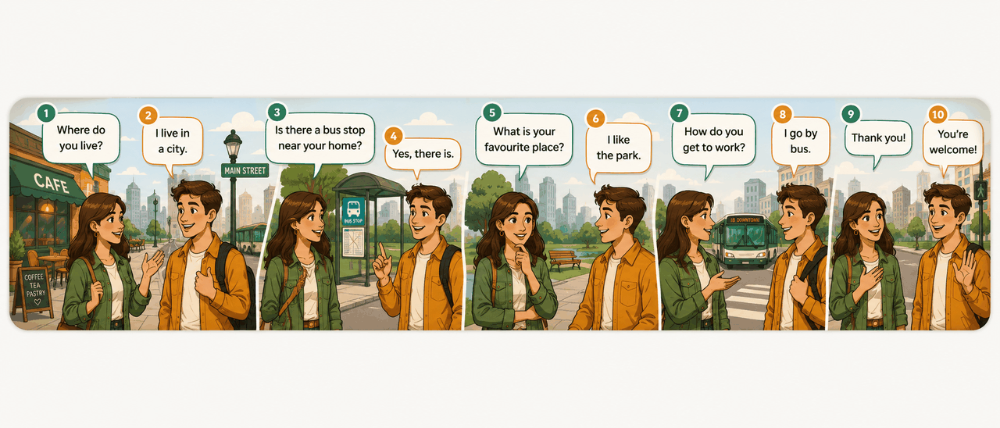
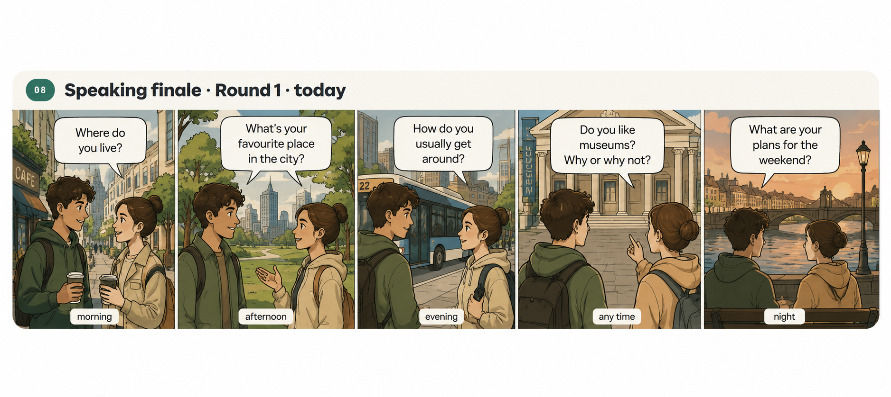
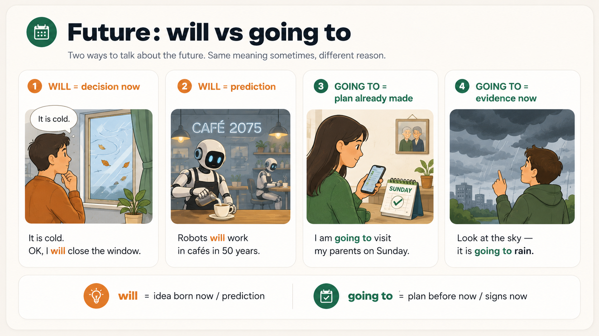

15 интерактивных блоков · ~90 минут. Активируем всё что у тебя уже работает: There is / are, It is, Present Simple / Continuous. Учимся задавать вопросы и говорить через опоры, а не «из пустоты». В финале — мягко открываем будущее: will и going to.
Before you start, say each frame out loud. This is your compass for the next 90 minutes.
Чейн из 4 фраз про любое место: «There is a market. It is cold. I wear a coat. I am wearing boots now.» — собери такую цепочку про свой район за 30 секунд. Вслух.
Until now you said «there is a park». Boring. Today — adjectives for places. They are the spice your speech needs. 12 cards: tap → translation + example. Say each one twice out loud.
Answer out loud, full sentence, at least one adjective from above in each answer. ▶ to hear the question · ✓ Done when you've said it.
Look at the map. Tap each dot in turn — hear the word + say a full sentence aloud: «There is a … / This is a …». Green tick = you said it.
Speaking drill: после того как открыл все 10 — закрой страницу мысленно и опиши сцену с нуля 8 предложениями подряд. Используй все 4 формы из секции 01.
Each clip is 3–5 seconds. Watch and say one sentence in Present Continuous out loud. ▶ hear the model · ✓ Done when you've said it.
Two real conversations across our city. Read each dialogue aloud, both roles. Then read it again playing one role only — the other side speaks in your head. ▶ to hear how it sounds.
8 phrases from a city conversation, shuffled. Click them in the right order. Click ▶ next to any phrase to hear it. When all 8 are placed correctly — green. Wrong order — red. Drag-back: click a phrase in the answer slot to return it.

Each side has 10 questions about the city and your normal day. Partner can't see yours. Answer in full sentences using the template — never «yes / no».
Fill each step with one English sentence. Then read them all out loud as one connected story. Auto-saved.

Six unusual questions. Not «describe your city» — specific situations. Answer in 2-3 sentences each. ▶ to hear · ✓ Done when said.

Two ways to talk about future. The difference is not in meaning — it is where the idea came from. Look at the 4 panels above, then read the four frames.
Short rule in one line:
— will = idea born now (decision, promise) OR prediction about the world.
— going to = plan made earlier, OR signs are showing it now.
Native speakers mix these all the time. Start using both — accuracy will follow.
Read the situation out loud and react with will. No preparation — first thing that comes to mind. ▶ to hear the prompt. ✓ Done when said.
Put in will ('ll) or won't. Type the full word — will or won't.
Tell me what you already decided earlier. Use going to. Full sentences. ▶ to hear the question.
Choose the right form. Wrong click → red + the explanation appears.
Not a vocab textbook — this is your base. 8 words that open the future conversation. ▶ hear the word · say it twice out loud.
Same tap-and-name game — but the city is 50 years from now. Tap each dot · describe it out loud with will or going to.
Then: опиши всю сцену 8 предложениями подряд. Структура: что появится (There will be …) → каким станет город (It will be …) → что будут делать люди (People will …) → твой личный план (I am going to …).
Six final questions on the future. Same rule — 2-3 sentences each. ▶ hear · ✓ Done when said.
Five real exercises with auto-check — no textareas. Green = right. Red = fix and try again. By next class, everything should be green.
Next lesson (5 июля · "Yesterday in my city"): мягко вводим Past Simple через сюжет «что я делал вчера / в прошлое воскресенье». 5 базовых неправильных глаголов — went, was, had, saw, did. Закроем три времени.